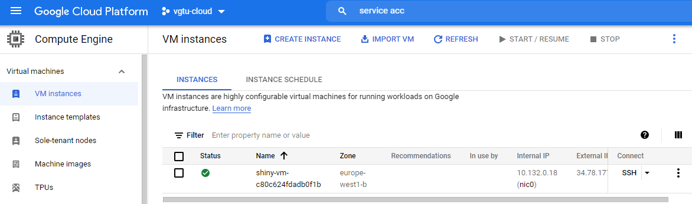

Chapter 2 Public Cloud Setup
2.1 Security
Taking the functional requirements aside, security requirements represent a major issue that has to be met in order of easing some of these obstacles (Alam 2020). Gartner predicts that through 2025, 99% of cloud security failures will be the customer’s fault.
Despite bringing many benefits, the cloud computing paradigm imposes serious concerns in terms of security and privacy, which are considered hurdles in the adoption of the cloud at a very large scale. Customers and organizations in the cloud should be aware of threats, attacks and vulnerabilities, as security awareness is considered the first step to ease the adoption of the cloud
https://www.mdpi.com/2076-3417/11/19/9005/pdf
Various researches have been done on privacy and security in CC. Arjun et al in paper [3] stated that security issues are based on the cloud provider, service user, and instance. Another researcher in paper [4] argued that security issues are based on the delivery model, PaaS, IaaS, and SaaS.
https://iopscience.iop.org/article/10.1088/1742-6596/1979/1/012038/pdf
As in cloud computing, oceans of data will be stored. Data stored in public cloud would face both outside attacks and inside attacks since public cloud provider themselves are untrusted.
https://ieeexplore.ieee.org/document/8622531
A. Validation of OTP B. Integrity Checking C. Access Control D. Secure Deletion E. Encryption F. Data Masking G. Intrusion Detection System
https://www.ijrte.org/wp-content/uploads/papers/v8i1s4/A10030681S419.pdf
Almost three-quarters of organizations hosting data or workloads in the public cloud experienced a security incident in the last year. Seventy percent of organizations reported they were hit by malware, ransomware, data theft, account compromise attempts, or cryptojacking in the last year. Ì Data loss/leakage is the number one concern for organizations. Data loss and leakage topped our list as the biggest security concern, with 44% of organizations seeing data loss as one of their top three focus areas. Ì Ninety-six percent of organizations are concerned about their current level of cloud security. Data loss, detection and response, and multi-cloud management top the list of the biggest concerns among organizations. Ì Multi-cloud organizations reported more security incidents in the last 12 months. Seventy-three percent of the organizations surveyed were using two or more public cloud providers and reported more security incidents as those using a single platform. Ì European organizations may have the General Data Protection Regulation (GDPR) to thank for the lowest attack rates of all regions. The GDPR guidelines’ focus on data protection, and well-publicized ransomware attacks have likely led to these lucrative targets becoming harder for cybercriminals to compromise in Europe. Ì Only one in four organizations see lack of staff expertise as a top concern despite the number of cyberattacks reported in the survey. When it comes to hardening security postures in the cloud, the skills needed to create good designs, develop clear use cases, and leverage third-party services for platform tools are crucial but underappreciated. Ì Two-thirds of organizations leave back doors open to attackers. Accidental exposure through misconfigurations continues to plague organizations. Security gaps in misconfigurations were exploited in 66% of attacks (either through attackers exploiting a flaw in the web application firewall to access account credentials or attackers taking advantage of a misconfigured resource), while 33% of attacks used stolen credentials to get into cloud provider accounts
2.2 Networking
For example, a misconfigured route table on an organization’s firewall leaves the window open. Virtual machines running private server workloads or hosting sensitive data suddenly become accessible from the internet.
The impact of configurations on data security Organizations had databases open to the Interne
Some security recommendations for network security can be summarized as follows: • The internal communication of the cloud must adopt secure communication techniques such as HTTPS, and also the transmission channel must be encrypted by TLS. • Using anomaly detection solutions for HTTP requests that can effectively prevent any malicious network intrusion behaviors. • The cloud can use public security services such as web application firewalls (WAF), virtual firewalls, virtual bastion machines, virtual host protection and virtual database audit systems
https://cloud.google.com/kubernetes-engine/docs/concepts/network-overview
2.3 Infrastructure as Code
Terraform is an open source tool that lets you provision Google Cloud resources with declarative configuration files—resources such as virtual machines, containers, storage, and networking. Terraform’s infrastructure-as-code (IaC) approach supports DevOps best practices for change management, letting you manage Terraform configuration files in source control to maintain an ideal provisioning state for testing and production environments.
https://cloud.google.com/architecture/managing-infrastructure-as-code
2.4 Use Case
2.4.1 Shiny Server on Compute Engine
main.tf:
provider "google" {
project = "vgtu-cloud"
region = "europe-west1"
}
// Terraform plugin for creating random ids
resource "random_id" "instance_id" {
byte_length = 8
}
// Google compute instance, Ubuntu Server - Europe region
resource "google_compute_instance" "default" {
name = "shiny-vm-${random_id.instance_id.hex}"
machine_type = "f1-micro"
zone = "europe-west1-b"
boot_disk {
initialize_params {
image = "ubuntu-2004-lts"
}
}
// Install R, Shiny Server open source and all the dependencies
metadata_startup_script = "sudo apt-get update; sudo apt-get install -yq build-essential; sudo apt-get install -yq r-base-dev; sudo apt-get install -yq r-base; sudo apt-get install -yq r-base-dev ; sudo apt-get install -yq libxml2-dev; sudo apt-get install -yq libssl-dev; sudo apt-get install -yq libcurl4-openssl-dev; sudo apt-get install -yq r-base; sudo apt-get install -yq gdebi-core ; sudo apt-get install -yq r-cran-rcpp; sudo apt-get install -yq g++; sudo wget https://download3.rstudio.org/ubuntu-14.04/x86_64/shiny-server-1.5.17.973-amd64.deb ; sudo gdebi -n shiny-server-1.5.17.973-amd64.deb;"
network_interface {
network = "default"
access_config {
// Include this section to give the VM an external ip address
}
}
}
// Firewall exeptions
resource "google_compute_firewall" "default" {
name = "shiny-app-firewall"
network = "default"
source_ranges = ["0.0.0.0/0"]
allow {
protocol = "tcp"
ports = ["3838"]
}
}Terraform used the selected providers to generate the following execution
plan. Resource actions are indicated with the following symbols:
+ create
Terraform will perform the following actions:
# google_compute_firewall.default will be created
+ resource "google_compute_firewall" "default" {
+ creation_timestamp = (known after apply)
+ destination_ranges = (known after apply)
+ direction = (known after apply)
+ enable_logging = (known after apply)
+ id = (known after apply)
+ name = "shiny-app-firewall"
+ network = "default"
+ priority = 1000
+ project = (known after apply)
+ self_link = (known after apply)
+ source_ranges = [
+ "0.0.0.0/0",
]
+ allow {
+ ports = [
+ "3838",
]
+ protocol = "tcp"
}
}
# google_compute_instance.default will be created
+ resource "google_compute_instance" "default" {
+ can_ip_forward = false
+ cpu_platform = (known after apply)
+ current_status = (known after apply)
+ deletion_protection = false
+ guest_accelerator = (known after apply)
+ id = (known after apply)
+ instance_id = (known after apply)
+ label_fingerprint = (known after apply)
+ machine_type = "f1-micro"
+ metadata_fingerprint = (known after apply)
+ metadata_startup_script = "sudo apt-get update; sudo apt-get install -yq build-essential python-pip rsync; pip install flask; sudo apt-get install -yq r-base-dev; sudo apt-get install -yq r-base; sudo apt-get install -yq libxml2-dev; sudo apt-get install -yq libssl-dev; sudo apt-get install -yq libcurl4-openssl-dev; sudo apt-get install -yq r-base ;sudo apt-get install -yq r-base-dev ; sudo apt-get install -yq gdebi-core ; sudo apt-get install -yq r-cran-rcpp; sudo apt-get install -yq g++; sudo wget https://download3.rstudio.org/ubuntu-14.04/x86_64/shiny-server-1.5.17.973-amd64.deb ; sudo gdebi -n shiny-server-1.5.17.973-amd64.deb;"
+ min_cpu_platform = (known after apply)
+ name = (known after apply)
+ project = (known after apply)
+ self_link = (known after apply)
+ tags_fingerprint = (known after apply)
+ zone = "europe-west1-b"
+ boot_disk {
+ auto_delete = true
+ device_name = (known after apply)
+ disk_encryption_key_sha256 = (known after apply)
+ kms_key_self_link = (known after apply)
+ mode = "READ_WRITE"
+ source = (known after apply)
+ initialize_params {
+ image = "ubuntu-2004-lts"
+ labels = (known after apply)
+ size = (known after apply)
+ type = (known after apply)
}
}
+ confidential_instance_config {
+ enable_confidential_compute = (known after apply)
}
+ network_interface {
+ ipv6_access_type = (known after apply)
+ name = (known after apply)
+ network = "default"
+ network_ip = (known after apply)
+ stack_type = (known after apply)
+ subnetwork = (known after apply)
+ subnetwork_project = (known after apply)
+ access_config {
+ nat_ip = (known after apply)
+ network_tier = (known after apply)
}
}
+ reservation_affinity {
+ type = (known after apply)
+ specific_reservation {
+ key = (known after apply)
+ values = (known after apply)
}
}
+ scheduling {
+ automatic_restart = (known after apply)
+ min_node_cpus = (known after apply)
+ on_host_maintenance = (known after apply)
+ preemptible = (known after apply)
+ node_affinities {
+ key = (known after apply)
+ operator = (known after apply)
+ values = (known after apply)
}
}
}
# random_id.instance_id will be created
+ resource "random_id" "instance_id" {
+ b64_std = (known after apply)
+ b64_url = (known after apply)
+ byte_length = 8
+ dec = (known after apply)
+ hex = (known after apply)
+ id = (known after apply)
}
Plan: 3 to add, 0 to change, 0 to destroy. Shiny server is reachable for everyone. More granular firewall rules could be applied for not exposing it to the whole internet. Additional authentication and https protocol could be added if needed.

Shiny Server is Alive
Improvements could be made:
SSL for security
Load balancer
VM images
VM images with preinstalled software for easier replication.
Integration with git flow and Github actions
- Variables
- Environments and branches
- jenkins, git actions
- plan stored in GCS bucker
VPC peering
Google Cloud VPC Network Peering allows internal IP address connectivity across two Virtual Private Cloud (VPC) networks regardless of whether they belong to the same project or the same organization.
VPC Network Peering enables you to connect VPC networks so that workloads in different VPC networks can communicate internally. Traffic stays within Google’s network and doesn’t traverse the public internet.
VPC Network Peering gives you several advantages over using external IP addresses or VPNs to connect networks, including:
Network Latency: Connectivity that uses only internal addresses provides lower latency than connectivity that uses external addresses. Network Security: Service owners do not need to have their services exposed to the public Internet and deal with its associated risks. Network Cost: Google Cloud charges egress bandwidth pricing for networks using external IPs to communicate even if the traffic is within the same zone. If however, the networks are peered they can use internal IPs to communicate and save on those egress costs. Regular network pricing still applies to all traffic.
Service account and zero trust
Least amount of privileges
2.4.2 Shiny Server on GKE

Shiny on GKE

Shiny app in action
https://anderfernandez.com/en/blog/put-shiny-app-into-production/

GCP Load Balancer
Load balancer - single point of entry
Rolling updates
Limitations
2.4.3 Bonus - Security considerations
IPs from unknown sources
References
Alam, Tanweer. 2020. “Cloud Computing and Its Role in the Information Technology.” SSRN Electronic Journal, January. https://doi.org/10.2139/ssrn.3639063.